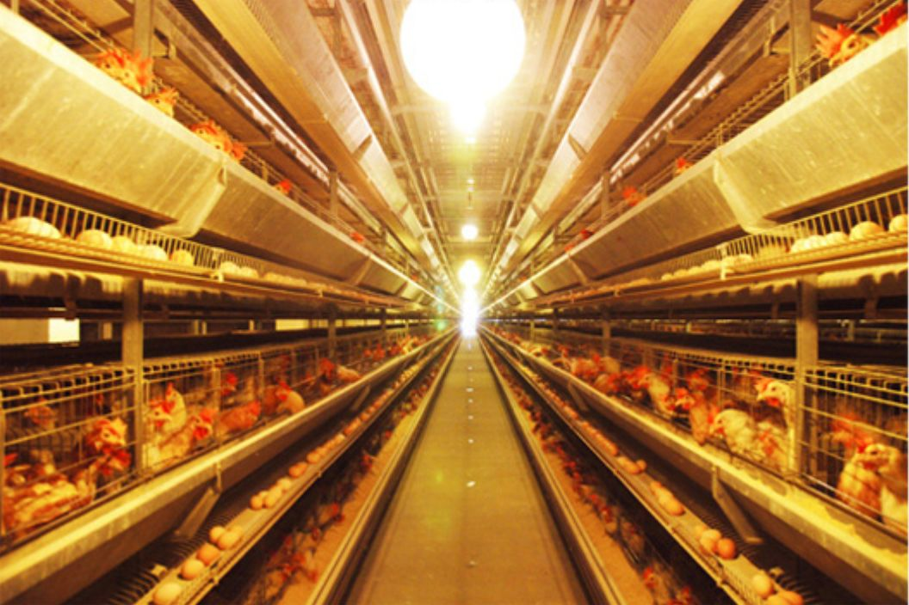
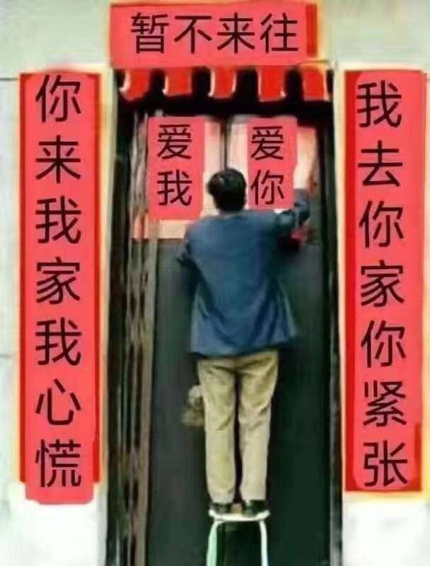
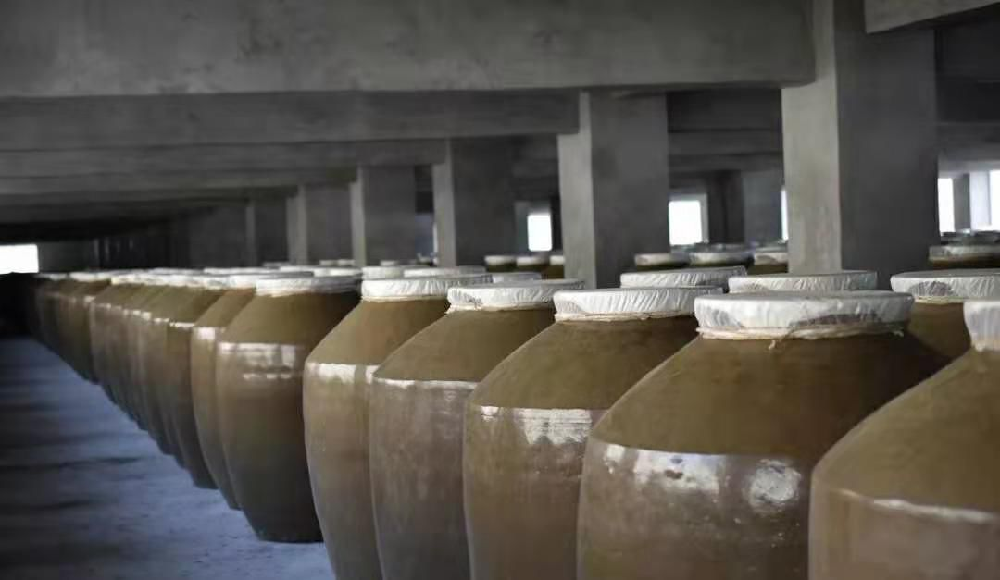
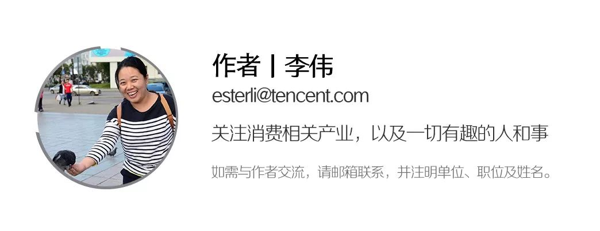

肺炎阴影下，十个普通人的烦恼
原文链接 备份链接 昨天是春节假期后返工第一天，但因为新冠肺炎的影响，注定了是一个不一样的开工日。每日人物询问了10个不同行业已经开工的人，他们正在做的工作，和我们的生活息息相关，记录他们的生活和烦恼，也是记录这次疫情所影响的不同侧面。 …


作者 | 李伟 江晓川 许文苗 编辑 | 杨颢
出品 | 棱镜·腾讯小满工作室
欢迎下载腾讯新闻APP，阅读更多优质资讯

从私人关系到平日工作，这些人多和武汉没太多直接关系。和你我一样，他们是通过手机、电视关注着这个叫新型冠状病毒的疾病，在家祈祷着疫情赶紧过去。
但整个社会又是一个有机体，每个企业、每个家庭、每个人都是这其中的一个个小小细胞。牵一发动全身，即使身体仍健康，他们也都与这场疫情有了丝丝缕缕的联系。
从餐饮到旅游，从制造业到进出口，企业经营压力正在显现。2月2日晚间，苏州市率先公布了帮扶中小企业共渡难关的十条政策，为他们加大金融支持、稳定职工队伍、减轻负担。上海、北京等地亦跟进，出台新规救扶企业。
银行业也在行动：针对受疫情影响较大的批发零售、住宿餐饮、物流运输、文化旅游等行业，多家银行表示不抽贷、不断贷、不压贷；对湖北省内普惠性小微企业、个体工商户和私营企业主经营性贷款，在现有利率基础上下调0.5个百分点。
在这个最特殊的开年，不煽情也不批判，不盲目乐观也不过分悲观，我们听听这些中小企业创业者的所见所闻、所思所感，他们与这场疫情的真实“对抗”。
令人鼓舞的是，尽管现在大家或多或少有些损失，但他们都能理解并坦然接受，也都在积极寻求出路。安全第一，“创业者总得乐观一些”。

徐鸿飞，上海，鲜蛋产业25年
300万只鸡眼看要断粮，各机构紧急支援

鸿轩生态农业养殖场
我是1996年到上海，在国营蛋品企业做销售；2001年出来创业，创立了徐鸿飞小鲜蛋，到现在创业快20年了，一直做鲜蛋产业。
我们公司（江苏鸿轩生态农业有限公司）营销总部在上海，生产总部在南通；因为是上海市第一批民生必备物资生产企业，正月初六就被允许复工了。
2月1号，我们往武汉送了14.4万个鲜蛋，9万个捐给武汉协和医院，5.4万个捐给武汉科技大学附属天佑医院。
今天（2月3号）正好我过生日，我们夫妻俩两大家人商量着说就算了，今年就别聚餐了，各自在视频问候了一下。
我在这行25年了，今年是第一年遇到有钱也买不到货的情况。以往不管是碰到什么行情，或是一些疫病，都不会影响到上游玉米、豆粕的供给。
我们是养殖行业，每天都是需要饲料的，现在即使你有钱，货物流也成问题。举个例子，我们河北、河南的玉米供应商，很积极地把车开到自己家仓库里，结果村委会拦住不准发车。
饲料对我们是硬需求，我们本来已经算是准备充足的了，备了半个月的饲料，从腊月二十六到正月初十的，仓库当时爆满了。在南通，我们有300万只鸡，每天消耗300吨饲料，到现在（2月3日）只剩两天的库存了，几乎就要空仓了。
每天每只鸡需要105克饲料，这是雷打不动的。所以我们面临的情况就是打仗一样，要想办法多搞饲料，几百万只鸡一旦饿肚子，就麻烦了。给它饿一两天，产蛋效率马上从现在的90%（100只鸡里90只产蛋）锐减为70%，而且蛋鸡身体恢复要三个月。断粮十天八天它死不了，但是鸡体损伤了，就很难恢复了。
我们昨天（2月2日）紧急开会协调，上海光明集团帮忙，从上海粮食和物资储备局调配一些玉米和豆粕，估计能撑几天。江苏省农发行也在帮忙，给我们寻找可以用的玉米供应商；河南、河北也通过当地农业办公厅在协调。
还有就是资金流的问题，我们也非常着急，业务款回款基本要等到2月9号上班以后。我们是年销售额近20亿的企业，一个月不回款就是一两个亿现金，春节前还买了一大批饲料，没有回款，账上储备现金不够的。
真没意料到节后会这么长时间不能回款。这些天各方也都在协调，像上海市政府、南通市政府。我们这边应该政府比较开明，金融办、发改委等部门帮忙，像车辆绿色通道证件很快办下来。很期待各地出台防疫期间的信贷扶持政策，我也仔细研究了苏州出台的10条政策，其实作为民营企业来说，一个共识的诉求是减免税收。（备注：“苏十条”其中第八条就是减免中小企业税费。规定：因疫情原因，导致企业发生重大损失，正常生产经营活动受到重大影响，缴纳房产税、城镇土地使用税确有困难的，可申请房产税、城镇土地使用税困难减免。）
下游鸡蛋销售我不担心，没有受到什么影响，超市卖场的销售还提升了50%以上。现在鸡蛋批发价格比放假之前跌了50%，从4.5块/公斤，跌到2.4-2.5块/公斤。这种批发价下滑是短期的，因为学校、工厂什么的还没开学、开工，后面鸡蛋价格应该会迅速上涨。
除了我们捐赠给武汉几家医院，现在当地好多医院也给我们发了函，要求援助，之前那里的鸡肉、鸡蛋供应严重不够。我们计划捐助100万个鲜蛋。
接下来吧，期盼疫情尽快稳定，同时，让民生物资流动起来。
老徐，广州，二房东
号召租户，推迟返工，一起熬过14天
大概5年前，经老乡介绍，我来到了广州天河区城中村，成为一名二房东。
广州是一座很包容的城市，城市村就像海绵一样，容纳了大量的外来务工人口。我这边的租户形形色色，有做淘宝生意的、有在餐饮店打工的，有在公司上班的小白领、也有一家老小一起租住的。
因为城中村距离市区近，周围有超市、商场、地铁的配套，所以基本上每个月可以出租95%以上的房间。
二房东的工作，就是从广州本地房东手中盘下房子，每个月给房东交固定房租，我再把房间分租出去，进行统一管理，赚取中间的差价。一般而言，我的房租出租率要达到90%以上才能保本，所以整体风险还是非常大的。
2020年，新型冠状病毒肺炎突然爆发，武汉很快就实施了封城。初期，我并不担心，临近春节，广州人有逛花市的习惯，距离我的楼不远处的大街上，经常有花商摆摊位卖花，形成一个临时的花市。人流密度很大，但是大家基本都不戴口罩。
过完除夕，我感觉情况不太对了，新闻报道中的感染人数越来越多，广州的案例数也在明显增加。不久，政府就号召大家居家隔离，企业推迟开工时间。
按照往年的情况，大年初七左右，我这边的租客基本上都应该返穗了。这次，大家因为隔离要求、担心感染等原因，回来的人数很少。到初十左右，大概只回来了20多家租户。
这几天，我每天都会戴着口罩守在门厅，让租户做好登记注册，提醒他们一定要戴口罩，一定要勤洗手！
基本上，年轻人的自我防护意识都比较强，但是老年人还是不行。我已经提醒一位婆婆好几次要戴口罩，但是这位婆婆说超市、药店都买不到口罩，她也没办法。
我现在特别担心电梯会发生传染，因为Sars期间好像就有电梯间感染的案例。我每隔两个小时都会向电梯间喷84消毒液消毒。本来年前，我还买了75%浓度的酒精，但是电商显示“受国家假期政策调整及交通管控影响，订单略有延迟”，一直收不到货。现在只能希望电商能够赶紧发货，我把电梯更加彻底消毒一下。
新闻里面说要减少人和人的直接接触，我想外卖和快递也是隐患，于是赶紧找了一个闲置的柜子，放在门口，要求所有外卖和快递小哥都放在这个柜子里，不要进入楼里，增加感染风险。
最近几天，有租户微信问我，能不能减免租金，我想了很久，最后只能在朋友圈说“对于大家的要求，我真的无能为力”，还加了三个大哭的表情包。
这个问题真的是无解的难题，在我这个小生意里，涉及到的三方：本地房东、二手房东、租客，大家都很难。
首先是租客，大多数是外地的，因为疫情大家推迟春节返城，收入可能减少，所以有些人希望能够减免部分房租。
其次是房东，很多本地房东其实是贷款建这些出租屋的，每个月都要向银行还贷。我这边租金交不上去，本地房东的贷款也还不上。
最后我也很难。我每个月都要给房东交一大笔房租。因为春节原因，我1月份的房租还没收齐，随着疫情的发展，感觉2月份的房租也有点悬。我的中间利润其实很薄弱，如果真的减租，那么只能自己承担亏损。

老徐在朋友圈发的图片
我其实很担心租户大量回来，人一多，感染的几率就大。现在我每天都在朋友圈里面号召租户，响应政府要求，能不出门就不出门，能推迟返工就推迟返工。电视里面说，这种病毒的潜伏期是14天，我想把这14天熬过去就好了。
我现在经常对自己说，心态放轻松，不要总是搞的那么紧张，只要努力保证大家健康，现在的情况总会过去的。
志超，重庆人，创业3个月
教开源节流的课更火爆，我准备找工作了
我是1990年的，刚刚创业。
我现在在重庆，很不幸的是我们小区有被确诊的了，整个小区全部管控，在家不敢出门了。
疫情打乱了我所有的安排，现在我突然觉得在公司上着班、有一份稳定工作挺好的。比如今天（2月3日）是我前公司开工的第一天，做游戏直播的公司，他们日子很好过的。我现在的心情……就感觉自己一手好牌打烂了。
我后来算了一下，大概今年犯太岁了，哈哈。这次是我第一次创业。
毕业后，我回了老家重庆，在地方媒体呆过一阵子；后来因为女朋友在广州，就也去了广州，那是2014年年底，之后一直在移动互联网公司做事。
我有几年是在做直播， 2019年下半年的时候，我跟一些前辈聊，他们说做教育很有前途。这其中线上教育挺痛苦、赚不到钱，我们就商量着一起做线下培训，把线上流量导到线下变现。告诉你，那些培训公司很赚钱的，随随便便的上两天课就刷个五六万块。
我2019年国庆节提了离职，年终奖也没要。本来是该有十四薪的。
之后，我们几个人合伙人一起研发课程，也找好了渠道合作方，计划春节后就开课。结果这几天渠道合作方给我们反馈，“大家半年内都别想这事了”。我最大的庆幸是没有招一堆人、租大办公室，那样的话我们肯定完蛋了。
我们的课程内容是关于怎么做营销的，销售对象主要是企业老板，他们带着团队来听。但目前最大的问题是（发生疫情后）他们都很焦虑，不会要听我们的课程的，我们是教别人如何花了钱之后，赚更多钱。有一家同行的课程现在异常火爆，他们是讲如何开源节流的……
我和合伙人商量，先把这个项目搁置吧，等经济回暖了再启动。
说实在话，没有让我亏进去更多的钱，我已经很庆幸了。
现在，我准备重新找工作了。这三个月创业是我人生的插曲，回想起来，经历也是难忘和值得总结的。
廖沙，北京，贸易
我计划好了，现在要做三件事
我是哈尔滨人，现在在北京，留学回国以后就创业了；主要做贸易，组装美容仪器出口，公司叫MBT Laser。
上个星期开始，物流不能走货了。我发往俄罗斯的一批货滞留在路上或者海关，对我来说，这情况突如其来。
我们做国际贸易，每年90%的利润都来自俄罗斯市场。现在，客户汇款什么的可以，但就是货物发不出去了。
我在莫斯科和圣彼得堡有仓库，我把库存都发给客户了。往常我们交货周期是7天左右，现在至少一个半月。
我们跟俄罗斯对接的大市场叫留布里诺，虽然算是在欧洲，但是里面有很多咱们东北人、浙江人在做生意，还有中东人，那里货物、仓储、零售全在一起。我现在天天跟俄罗斯朋友视频。

留布里诺市场
你知道吗？那边都开始抢口罩了。
我问俄罗斯的朋友能不能买到口罩，结果他说我还想从中国买点儿呢。今天（2月2日）早上五六点，我跟乌克兰的哥们聊天，他说有口罩，一下子发来好几种型号，还有防毒面具。
他说找到一两千口罩没什么问题，立马让他下单了，是3M比N95还高一个级别的口罩。三天前他打开电脑看到的口罩价格是1.2美金，我们聊完那会儿就变成2.4美金了，翻了一倍。我准备自己留一点儿，给同事、朋友都分一分。
我们公司在这边是十多个人，我算了下，折合每天的硬性成本支出是10万左右。没算房租，因为房租我是直接年付的。具体就是，社保我得给按时交，销售和科研人员的工资都不低， 1600多平米工厂的各种支出。别的不说，就这个工业用网络，一年20万、加一个主机（费用）。
反正耽误一个月是真“流血”。
间接损失呢，就是公司员工会担心这个市场会如何变化。咱小微企业10来个人，一年就这么点业绩，抗风险能力特别差，包括资金上、供应链上。我的同行比我更困难，有些四五十号人的公司，别说停一两个月，你就停一天，他脑袋都疼！
以前我们是纯贸易公司，2019年年中筹划着，开始陆陆续续小规模生产了，到2020年布局好了，人员、技术也配备上了，产品也定型了，马上就要开整、准备大干一场。
但现在，我们都在等整个产业链的重新开工、运作。
我们出口型中小企业，真是顶着风冒着雨。去年公司营业额挺可观，但到我们小业主手里不算多。还好，国家也支持，给退税，不同种类的商品、出口到不同的国家，有不同的税务补贴政策，我们这里在6%-7%左右，差不多能抵个增值税。
好在我还没有贷款，是用自己的钱扩产的。
我计划好了，现在要做三件事。
第一，我们继续谈业务，通过网络办公，只是咱把交货时间跟客户说清楚。你能等我一两个月，我给你打折，咱们两好并一好（互惠互利）。
第二，每天开个电话会议，跟大家伙鼓舞下士气。北京这面说2月10号复工，我绝对不让他们2月9号赶回来，我宁可给他们钱。假如有一个人回来感染了，你怎么办？莫不如再休息几天，大家都敞亮的，安全第一。
第三，我年龄不大，但是吃的盐还不少。这次以后，像公司卫生环境的管理，意识就要提高。
陈远河，连续创业者，如匠酒创始人
幸好有两轮融资，我有信心把企业运转下去
我是陈远河，如匠酒业的创始人。我是一个连续创业者，之前在教育行业做，最近一年在福建本地做一个酱香型白酒品牌。之前我花了大概一年时间，走遍了茅台镇附近好几十家酒厂，联合当地酿酒商一起合伙创立了“如匠”这个品牌。合伙人世代酿酒，技术很成熟，我要做的事情是拓展销售渠道和做品牌营销。
刚刚发布两个月，如匠就卖了1000多万的流水，从第一天开始就有利润。自福建龙岩起家，我希望2020年把如匠扩展到全省，销售额做到3个亿。但现在，肺炎疫情给我的计划造成了很大影响。幸好之前我还拿了两笔上千万的融资，能撑一阵子。

如匠在贵州的酿酒基地，一缸缸酱香酒正在发酵。
春节本来是酒类的消费高峰，第一个人们串门要送礼，第二个春节有聚会，大家多少会喝点。疫情一来，这两块儿基本都没有了。
之前，为了抓住春节的商机，我们提前制作了一批礼盒，把酒和酒具配在一起，礼盒单价是五百多块钱，总值五六百万。在年前，有一部分礼盒已经给到经销商渠道了，我们不做赊销，经销商拿货给现款，但他们手里的货没消化出去，会影响后续进货的节奏。我们现在还剩两百多万的货在自己手里，得后边再消化。
差不多是在1月21号，我们才发现市场情况有巨大的变化，太突然了，根本没有做好准备。一季度的经营目标肯定会做调整，至少会影响半年的收益。
我这次创业，从第一个月开始就在挣钱，净利润过百万。如果没受到疫情的影响，至少得挣个两三百万。我手下的人也都要9号之后才上班，整个2月上旬也基本浪费掉了。
接下来工作重点是拓展经销渠道，得去跟经销商面对面聊、沟通。因为是酱香型的酒，客单价稍高一点，没有100元以下的酒，大家还得倚赖线下渠道。现在如匠线上和线下渠道的比大概在2:8。
本来，为了拓展线下渠道，我们还计划举办更多活动，发布会、品酒会之类的，但现在都没法做。
有些钱注定要打水漂了。我们在一些要扩展的地方开了分店，预计年后开业，现在开不了业，物业成本得付吧。还有年前定下要开发布会的场地，广告投放，都是钱。
我一个月还得付个四五十万，员工的薪水。
现在唯一感觉比较幸运的，是延迟了年前招人的计划。业务拓展比较快，我本来计划年前招人的，当时没来得及，这为我省了一笔钱。
创业者遇到这样的状况，当然很不开心，但也没办法，及时调整吧。想一想，所有行业的人都要面对这个问题，也不是只有我们一家。还好创立企业不久，我就已经拿了两轮上千万的融资。疫情即使暂时不好转，我也有信心把企业继续运转下去，至少得再撑一年。
新闻上讲，那些比较有良心的房东，也会适当减少业主的房租。我们也会对经销商的目标任务做出调整，给他们减负。另外疫情结束后，如匠会多做一些营销活动，来帮助经销商拉动销售。
现在虽然有困难，但创业者嘛，总得乐观一些。
_（文中廖沙、老徐、志超为化名。_）



感谢您的阅读，欢迎在文后留言并点击“在看”，留言点赞第一名且60以上，获得一个月腾讯视频会员哦~ （截止时间：下周一下午18：00）

聚焦中国科技创新，书写深度商业故事
欢迎关注深网公众号，阅读更多优质原创内容。


扫码查看腾讯新闻客户端相关文章

本文版权归“腾讯新闻”所有，如需转载请在文后留言，经允许后方可转载，并在文首注明来源、作者及编辑，文末附上棱镜二维码。
第571期
实习运营编辑：陈诗雨 黄贺

点击“阅读原文”，查看腾讯新闻客户端相关独家文章！
你“在看”我吗？

原文链接 备份链接 昨天是春节假期后返工第一天，但因为新冠肺炎的影响，注定了是一个不一样的开工日。每日人物询问了10个不同行业已经开工的人，他们正在做的工作，和我们的生活息息相关，记录他们的生活和烦恼，也是记录这次疫情所影响的不同侧面。 …
原文链接 备份链接 *************▲*************玉龙雪山脚下的玉湖村。 （受访者供图/图） 全文共*4244*字，阅读大约需要10分钟。 在求助信里，我写了四样求支援的物品，是因为我只知道这四样。而实际情况 …
原文链接 备份链接 文 | 万千 村口终于开始拦阻到访者了。 2月1日，在钟南山院士表示，新型冠状病毒出现“人传人”的情况的十二天之后，及在武汉这座千万级人口的城市宣布封城的九天之后，我的家乡所在的江西省十八线县城终于进入了最严重的警备状 …
原文链接 备份链接 大家好，我是田静。 按照规定，今天已经是春节后第三个工作日了，我依旧待在家里处理工作。我以为很多人会和我一样，但事实却是：很多人冒着风险走出家门，回到自己的工作岗位。 离疫情中心千里远中越边境，张扬过了四个关卡才回到单 …
原文链接 备份链接 这样的经历让我们这次“两人世界”变得很值得、很难忘，也很有意义。当我们跟家里老人说，将帮助海外华人实现爱心心愿、把援助物资运回国时，他们也都非常支持。老人还让我们放心，说家里孩子都没事。 口述 | 王珠凤 整理 | …